Make sustainability pay for itself.
A CO2e measurement and trading platform for farmers, businesses and the people buying from them — built on the Green House Gas Protocol.
Choose your region to get started ↓
A CO2e measurement and trading platform for farmers, businesses and the people buying from them — built on the Green House Gas Protocol.
Choose your region to get started ↓Select your country below to access the YourFootprint CO2e tool — this is how most people log in.


Your Footprint Ltd. started as a single Danish farm trying to prove that sustainable agriculture could also be profitable. Five years on, that proof has grown into a platform now live across Scandinavia, Europe, Asia and Africa — built on the Green House Gas Protocol (GHGP) and the UN's REDD+ framework for forestry and woodland carbon, exceeding government expectations on CO2e modelling.
The third sector has spent decades proving sustainable practice is the right thing to do. We've proven it's also feasible — closing the gap between people, planet and profit that triple bottom line economics has never been able to close on its own.
We're developing machine learning and neural-network modelling on a vector-space database, to make our CO2e measurement sharper and more predictive over time. All our data is academically validated by one of our internationally accredited university partners.
Farmers use our tool to measure, farm and trade CO2e as a resource, turning better land management into real income. Companies use the same platform to calculate their Scope 3 footprint and buy verified CO2e credits to become certified carbon neutral.
For more information, contact admin@yourfootprint.uk
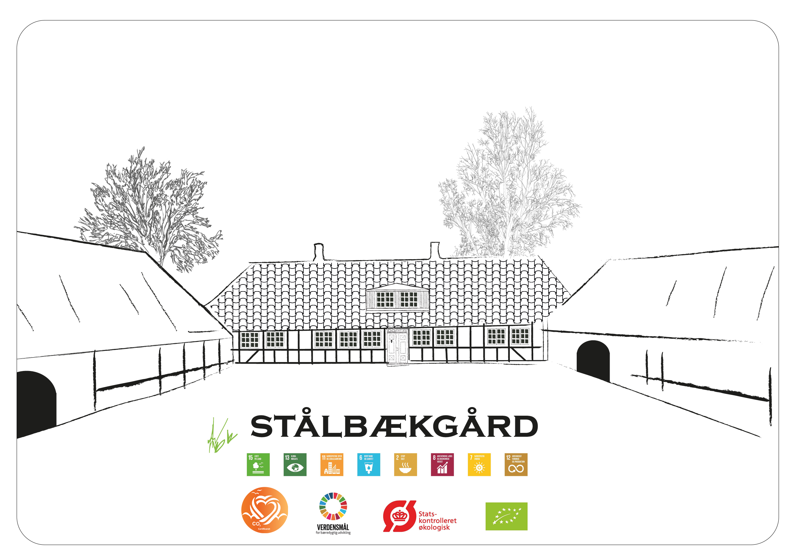
Before we ask anyone else to use this, we run it ourselves — our tool is built and tested on Stålbæk Gård, our own working farm in Denmark.
Visit Stålbæk GårdLooking for a way to reduce your CO2e footprint, cut production costs and open a new revenue line? This is built for working farms and cooperatives — not hobbyists.
What do farmers and cooperatives get using YourFootprint?
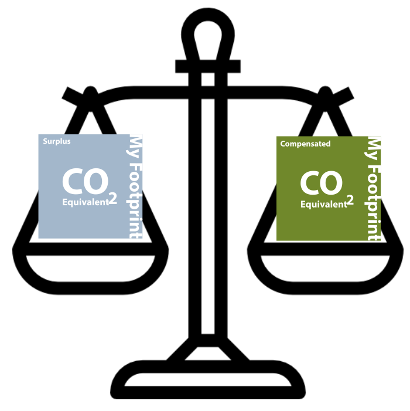
A full overview of your farm's CO2e status.
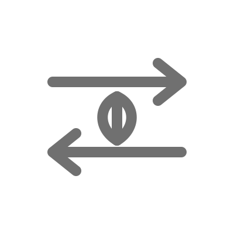
Direct access to CBAM-compliant CO2e credit trading.
Full ownership and control of your own farm data, shared only on your terms.
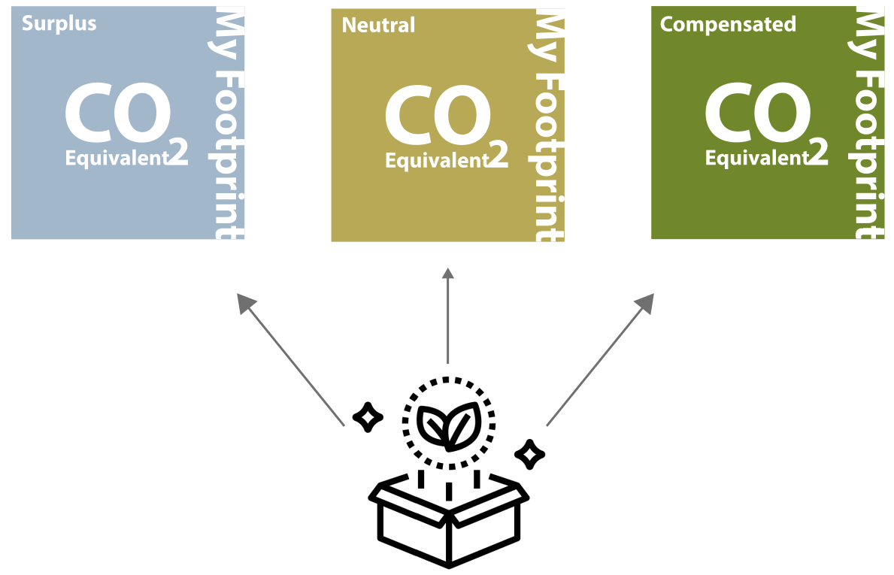
Sustainability accounting built for the long term. **This section requires a monthly subscription
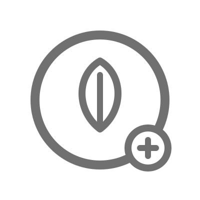
If your farm includes managed woodland, REDD+-aligned reporting lets you bring that forest carbon into your CO2e position alongside your farmed land.
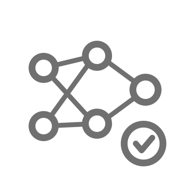
Every measurement runs through our machine-learning CO2e models, validated by independent university partners — so your numbers hold up to scrutiny.
After taking the YF Questionnaire, you can start using the benefits of the tool.
Net Zero legislation and CBAM taxation are closing in on manufacturers and upstream suppliers across the global supply chain. Upload your operational data and your bookkeeper or CFO can generate a fully certified Scope 1, 2 or 3 carbon audit — then buy the CBAM-compliant CO2e credits you need directly through the platform.
What do manufacturers and upstream SMEs get using YourFootprint?
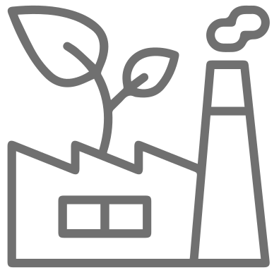
Scope 1, 2 and 3 carbon audits, generated directly from your own operational data.
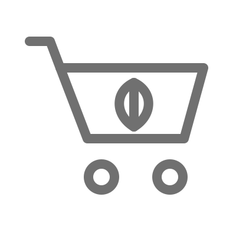
CBAM-compliant CO2e credits, purchased directly through the platform.
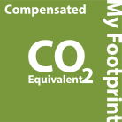
Sustainability branding.
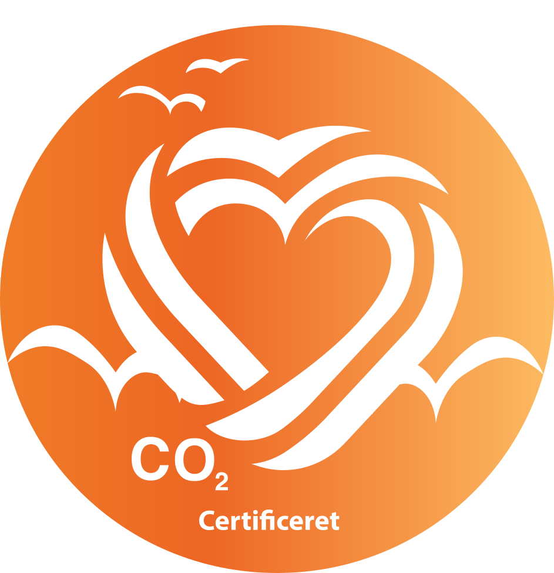
A certified CO2e-neutral status you can market.
Audit reports exported ready for regulators, customers or lenders.
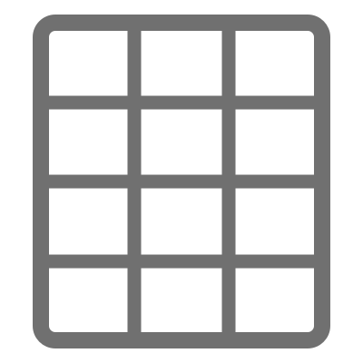
Sustainability accounting built for the long term.
After completing the questionnaire, you'll be redirected to the results page, with an overview of your audit plus a step-by-step guide to compensating your CO2e emissions and using the trading platform.
National and regional forestry bodies are sitting on a carbon asset most carbon markets can't currently price. Our platform gives forestry authorities a comprehensive Scope 3 carbon evaluation and certification system, measured to the UN's REDD+ framework, generating CBAM-compliant Certified CO2e Units ready for distribution into recognised domestic and international carbon markets.
What do forestry authorities get using YourFootprint?
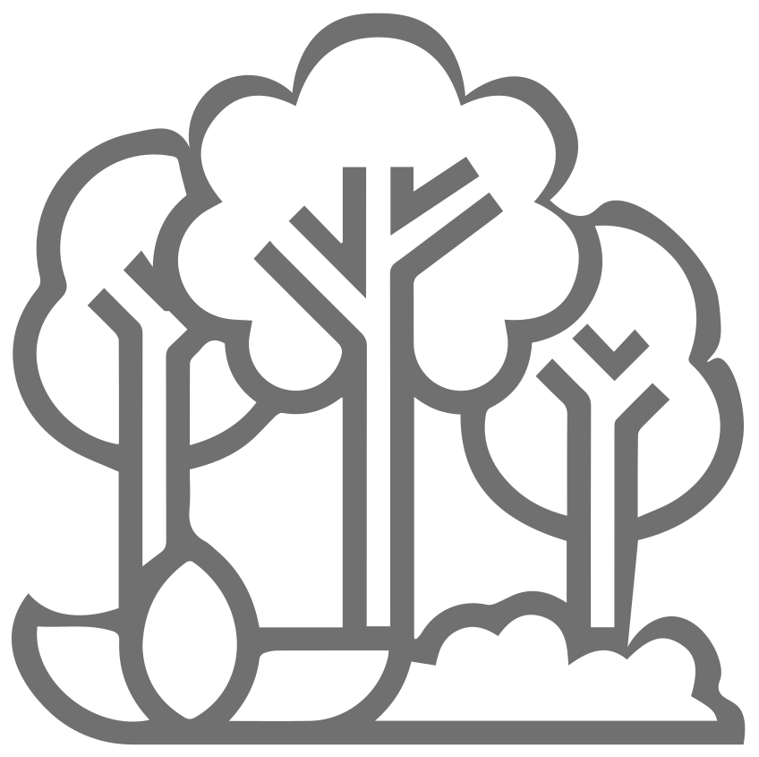
A comprehensive Scope 3 carbon evaluation across managed forest land.
CBAM-compliant Certified CO2e Units, generated and managed directly through the platform.
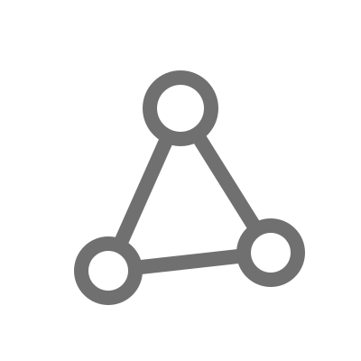
Distribution into recognised domestic and international carbon markets.
Sustainability accounting built to international GHG standards.
Your certification work is measured directly against the UN's REDD+ framework, the internationally recognised standard for forest carbon.
Carbon evaluations are generated using our machine-learning models, independently validated by university research partners for accuracy.
Running agricultural or sustainability programmes across a region takes more than good intentions — it takes a way to onboard, support and report on real communities at scale. YourFootprint gives NGOs a complete digital platform for exactly that.
What do NGOs get using YourFootprint?
Electronic onboarding for agricultural communities within your region.
Stakeholder engagement and support tools built for programme delivery.
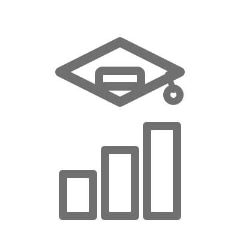
Capacity-building resources for the communities you work with.
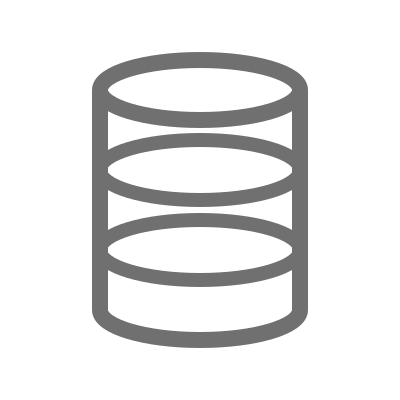
Customised data management, built to your programme's own reporting requirements.
Programmes that touch forestry or land-use change can be reported against the UN's REDD+ framework, giving your funders an internationally recognised benchmark.
All community data feeds into machine-learning CO2e models, independently validated by university research partners, so your impact reporting stands up to donor scrutiny.
From long-term agricultural data management to national agro-strategy deployment, YourFootprint gives governments one integrated platform to run sustainability monitoring and policy implementation on — built on data infrastructure that meets NIS-2, the EU's highest cybersecurity standard.
What do national governments get using YourFootprint?
Long-term agricultural data management across the whole sector.
Sustainability monitoring and policy implementation tools.
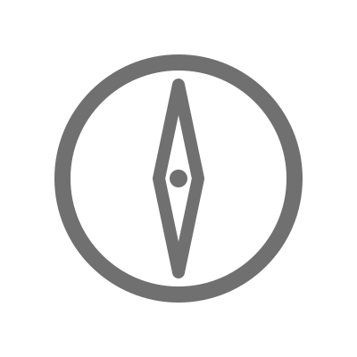
National agro-strategy deployment, through a single integrated solution.
Data infrastructure built to NIS-2, the EU's highest cybersecurity standard.
National forest-carbon policy can be reported directly against the UN's REDD+ framework, supporting your country's international climate commitments.
Every data point is processed through machine-learning CO2e models, independently validated by accredited university partners for academic and regulatory rigor.
This is where Your Footprint staff and system administrators manage the platform — not the regional CO2e tool. Looking for that instead? Choose your region above.